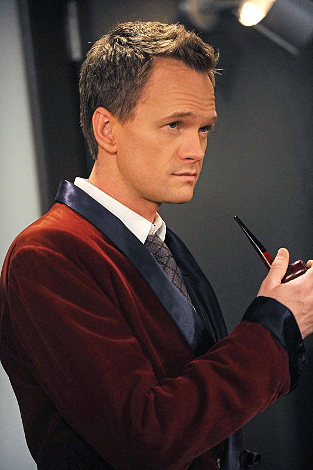

Legendary
NOME: Barney Stinson
NACIONALIDADE:
75% Americano e 25% Canadense
CITAÇÃO:
It´s going to be Legen... - wait for it - ...dary!
Ajude Barney Stinson a mudar o seu humor
Legen...

Recorde um pouco das aberturas
500 Miles